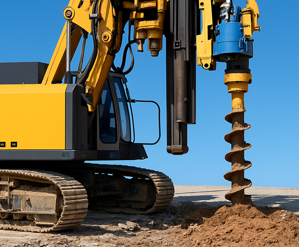

<section class="section about-section mb-100">
	<div class="block-container">
		<div class="about-block">
			<div class="about-block__image">
				
			</div>
			<div class="about-block__content">
				<div class="block-heading">
					<h2 class="block-heading__title">Стоимость бурения на воду</h2>
				</div>
				<div class="about-block__text">
					<p>
						Стоимость бурения скважин на воду под ключ включает несколько ключевых элементов, ведь это комплексная
						услуга, охватывающая как само бурение, так и обустройство скважины. В итоге вы получаете не просто отдельные
						элементы, а полностью готовую систему водоснабжения:
					</p>
					<ul>
						<li>Цена за бурение.</li>
						<li>Стоимость обустройства водозаборного узла.</li>
					</ul>
					<p>
						Разброс цен на бурение под ключ может быть значительным, что в основном связано с выбором материалов и
						автоматических систем. Если вы не уверены в выборе насоса или труб, просто свяжитесь с нашими специалистами,
						и они помогут подобрать оптимальные решения для вашего проекта.
					</p>
				</div>
			</div>
		</div>
	</div>
</section>